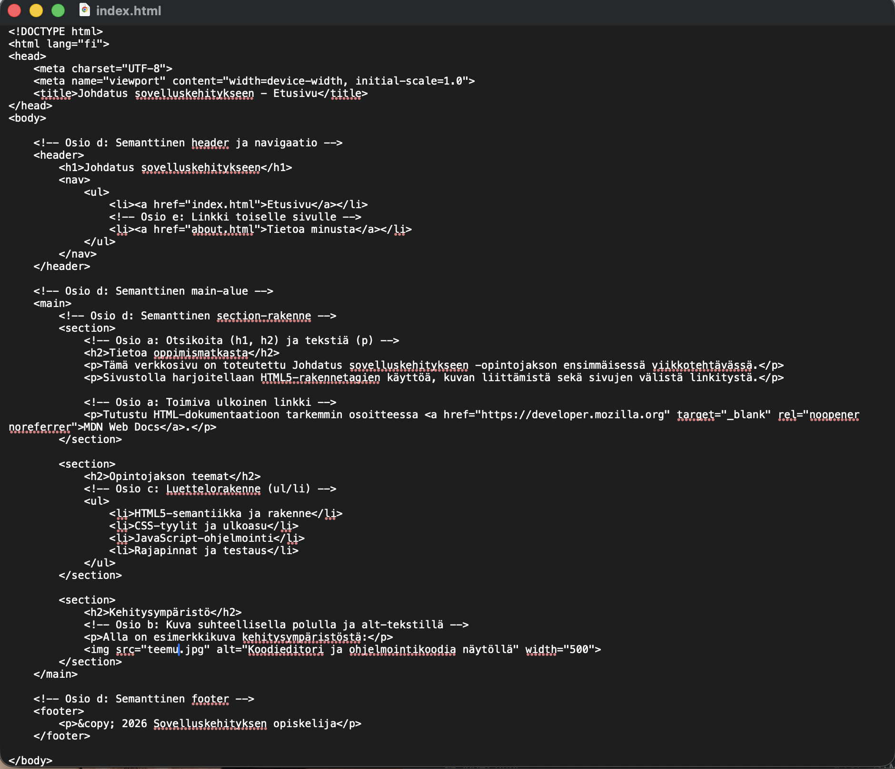

Tietoa oppimismatkasta
Tämä verkkosivu on toteutettu Johdatus sovelluskehitykseen opintojakson ensimmäisessä viikkotehtävässä.
Sivustolla treenataan HTML5-rakennetagien käyttöä, kuvan liittämistä sekä sivujen välistä linkitystä.
Käy tsekkaamassa omat kotisivuni teemukankainen.com.
Opintojakson teemat
- HTML5-semantiikka ja rakenne
- CSS-tyylit ja ulkoasu
- JavaScript-ohjelmointi
- Rajapinnat ja testaus
Kehitysympäristö
Alla on esimerkkikuva kehitysympäristöstä:

JavaScript-harjoitus (viikko 3)
Harjoittelen tällä sivulla muuttujia, ehtolauseita, laskurifunktioita ja silmukoita. Näet tulosteet avaamalla selaimen kehittäjätyökalut ja valitsemalla Console-välilehden.
Painikkeen toiminta on toteutettu JavaScriptillä:
Viikko 4: Säärajapinnan kokeilu
Valitse kaupunki ja hae ajankohtainen sää Open-Meteo-palvelusta. JavaScript hakee datan fetch()-komennolla ja tulostaa alkuperäisen JSON-vastauksen myös selaimen konsoliin.
Valitse kaupunki ja paina Hae sää.
Tietolähde: Open-Meteo. Rajapinnan tietoja haetaan vasta painikkeen painalluksella.